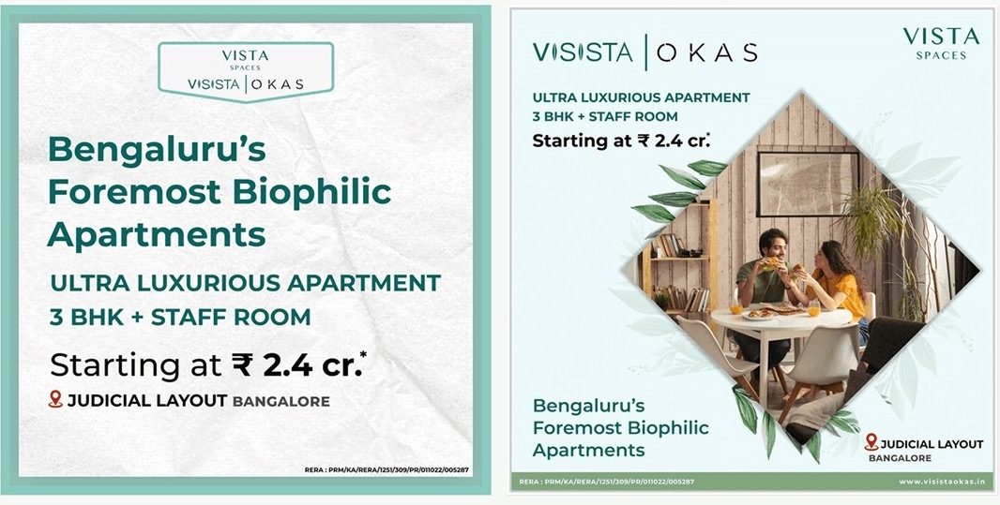
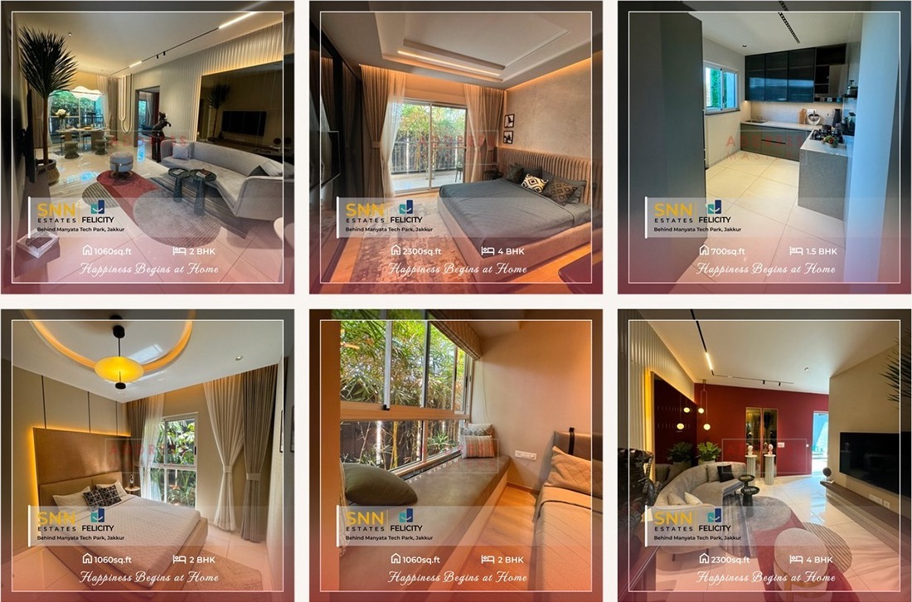
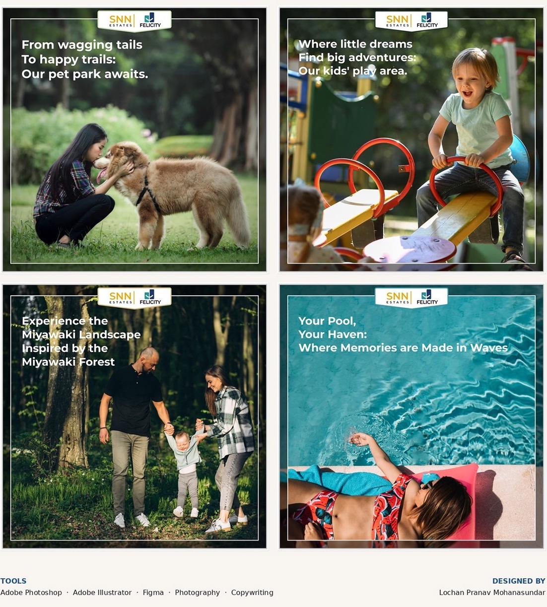
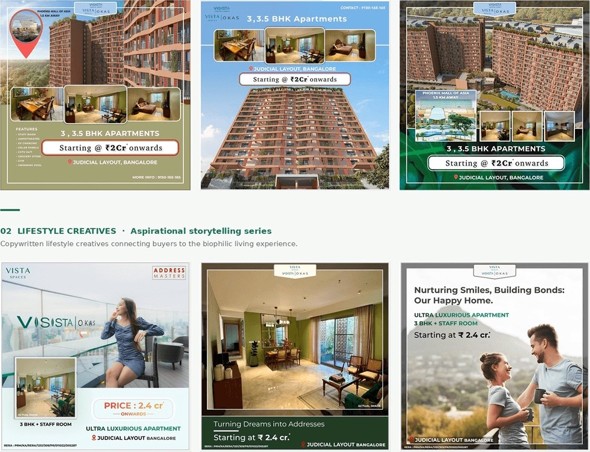

Context
Address Masters was an early-stage startup in Bangalore that marketed new residential developments. I joined in January 2024 as its only designer. This page is the marketing side of that job.
The campaigns
Over the six months I produced more than 200 marketing creatives, and the campaigns generated more than 1,000 qualified buyer inquiries. Two of them are complete campaign systems.
SNN Estates Felicity
A premium development behind Manyata Tech Park in Jakkur, with 2 to 4 BHK units. The campaign ran across social, digital and print in three content streams: interior photography of the show flats, property advertising with pricing and location, and an amenity storytelling series covering the pet park, the kids' play area, the Miyawaki forest and the pool.


Visista OKAS
Vista Spaces' luxury development in Judicial Layout, positioned as Bengaluru's foremost biophilic apartments, with 3 and 3.5 BHK units. Three series: property advertising showing scale, interiors and pricing, aspirational lifestyle creatives, and a bold brand identity series for the biophilic positioning.

Film
Both campaigns also ran on video. I shot and edited these two myself in March 2024, published on the Address Masters channel: a house tour of Visista OKAS and a vertical short touring an SNN Estates Felicity apartment.
Outcome
| 200+ | marketing creatives produced |
| 1,000+ | qualified buyer inquiries generated by the campaigns |
| 2 | campaign films, shot and edited |
| 2 | developments, each with its own campaign system |